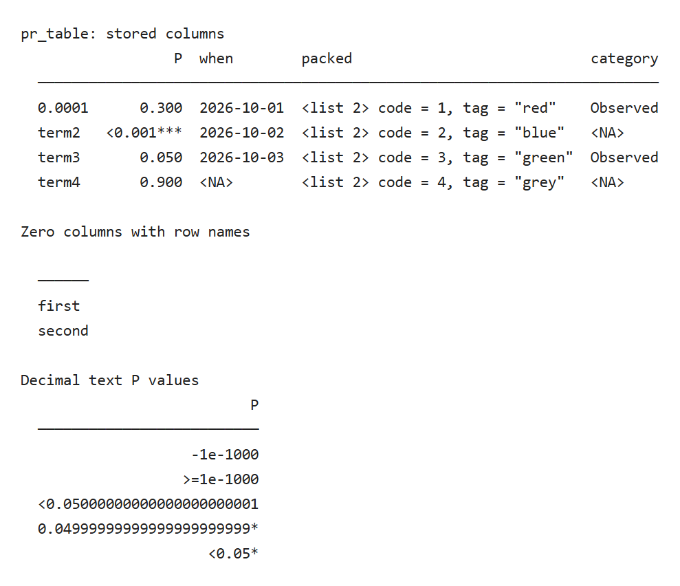
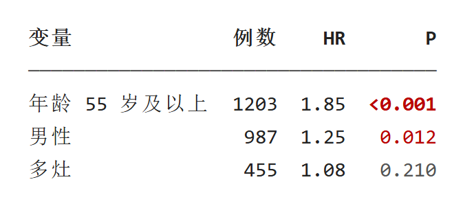

结果表与 P 值：pr_table
pr_table(data, p_col = NULL, highlight = NULL, rownames = FALSE, n = 20, align = NULL, digits = 2, width = NULL, indent = 2) 把数据框打印成对齐的纯文本表：粗体表头、一条灰线，然后每行一条。它不修改数据，屏幕上省略的行列仍在对象里。
2026-10-31补充按已推送 UtilsR 05f4c963（0.6.18）导出源码，在 Windows / WSL R4.4.3 独立运行下述合成示例。旧图保留原执行快照；此次没有重跑历史模型或安装包。
本轮补充按已推送 UtilsR 5a9d8eb（0.6.14）导出源码，在 Windows / WSL R 4.4.3 独立运行。新增预览来自真实控制台输出；原有截图保留各自注明的历史快照。
示例
第一张表演示 P 值、位数、高亮和缺失值；第二张是 30 行、8 列的宽表，只显示前 5 行。
library(UtilsR)
tab <- data.frame(
Variable = c("Age >= 55", "Male", "Multifocal", "Extrathyroidal", "Unknown"),
n = c(1203L, 987L, 455L, 210L, 31L),
HR = c(1.853, 1.25, 1.083, 2.4, NA),
beta = c(0.0003, 0.012, 0.21, 0.0007, NA),
P = c(0.00004, 0.0062, 0.049, 0.05, NA),
P_adj = c("<0.001", "0.019", "0.098", "<0.05", NA))
pr_table(tab, p_col = c("P", "P_adj"), highlight = 1)
set.seed(20261025)
wide <- data.frame(term = paste("Variable", 1:30),
matrix(round(rnorm(30 * 6, 0, 50), 2), 30,
dimnames = list(NULL, paste0("estimate_", 1:6))),
P = sort(runif(30, 0, 0.6)))
wide$P[1:2] <- c(0.0004, 0.004)
pr_table(wide, p_col = "P", n = 5)P 值列
p_col 指定 P 值列，可以不止一列。
- 数值列按
stat_pval(mode = "pvalue")的写法显示，小于 0.001 写成<0.001；文本列照原文。 - 颜色：小于 0.001 粗体红，小于 0.05 红，其余灰。阈值按原数值判断，
0.05本身不算显著，示例里的0.050是灰色、没有星号。 - 刚好低于 0.05 或 0.01、按三位小数会舍入成阈值的数值多显示几位：
0.0499写成0.0499*而不是0.050*，0.00999写成0.00999**，文字与颜色、星号一致（0.6.12 起；stat_pval()本身的写法不变）。 - 文本里的上界也能识别：
"<0.05"按低于 0.05 处理，显示为红色（无色时带一个星号）。 - 无色时用星号表达显著性：
***小于 0.001，**小于 0.01，*小于 0.05。 p_col写了数据里没有的列名时报错。
数值位数
- 整数列原样显示。
- 小数列默认保留
digits = 2位；整列都是整数值时不带小数。 - 如果一列里最小的非零绝对值按
digits舍入后会变成 0，整列改为保留两位有效数字所需的位数，最多 6 位。示例的beta最小值是 0.0003，所以整列显示 5 位小数（0.00030、0.21000）。 - 数值缺失显示为灰色
NA；文本缺失在无色时写成<NA>，与字符串"NA"区分。 - 列表列的每格按
pr_tree()的写法描述，例如<dbl 2> 1.1, 2.2，不再显示c(1.1, 2.2)这样的反解析文字（0.6.12 起）。
位数规则只管显示。需要论文格式的数字时，先用 UtilsR 的 fmt_* 函数把列转成文本再传入。
带类数值、完整单元格与临界 P 值（2026-10-30）
UtilsR 0.6.14（5a9d8eb）按原类的格式化方法显示 integer64、difftime 和 lubridate 时间跨度，不再把底层 double 存储当作实际数值。大整数应从字符串构造：先写成普通 double 再转 integer64，已丢失的末位无法靠打印恢复。这些类分别需要 bit64、haven 或 lubridate 的可选方法；RDS 回读时也按存储类加载对应命名空间。
矩阵／数组列先按数据行组织分量，再生成预览；过长的分量预览仍会按宽度省略，完整内容应从原对象读取。重复或空列名仍按列位置读取。小到六位小数仍会显示为零的非零数，以及宽度容纳不下的巨大数，改用科学计数法。下例只有 1–10 行人工显示样本，用于核对打印，不是统计模型结果。
library(UtilsR)
options(cli.num_colors = 1, cli.width = 80, width = 80)
stored30 <- data.frame(
id64 = bit64::as.integer64(c("2314", "9007199254740993", NA)),
period = lubridate::days(c(1, 2, NA)),
elapsed = as.difftime(c(1, 2, NA), units = "days"))
pr_table(stored30)
repeated30 <- data.frame(first = "left value", second = "right value")
names(repeated30) <- c("same", "same")
pr_table(repeated30)
array30 <- data.frame(id = c("a", "b"))
array30$components <- array(1:8, dim = c(2, 2, 2))
pr_table(array30)
tiny30 <- data.frame(value = c(1e-10, -1e-10, 1e-7, .1))
huge30 <- data.frame(value = c(1e100, -1e100, 2))
pr_table(tiny30)
pr_table(huge30)
p_numeric30 <- data.frame(P = c(.049999999, .0099999999, .0009999999, .05, .01, .001))
p_text30 <- data.frame(P = c(">0.001", ">=0.001", "<=0.05", "\u22640.05",
"<0.05", "\u22640.01", "0.0001", "-0.1", "Inf", "not available"))
pr_table(p_numeric30, p_col = "P")
pr_table(p_text30, p_col = "P")文本范围只有在能保证低于阈值时才带相应星号或颜色。例如 <0.05 带一颗星，<=0.05 和 ≤0.05 不能排除恰等于 0.05，因而不带星；≤0.01 只能保证低于 0.05，带一颗星。>0.001、>=0.001 没有显著性保证；无效数值文本也不赋星。数值型 P 值按未舍入值判断，必要时多显示小数；这项修复没有改写 stat_pval() 的通用接口。打印不能替代上游对 P 值有效性的检查。
仅重建网页预览时需要后半段的 HTML 保存函数；终端里直接运行上面的调用即可。
storage_lines30 <- capture.output({
pr_table(stored30); pr_table(repeated30); pr_table(array30)
pr_table(tiny30); pr_table(huge30)
})
plain_p30 <- capture.output({
pr_table(p_numeric30, p_col = "P"); pr_table(p_text30, p_col = "P")
})
colour_p30 <- withr::with_options(list(cli.num_colors = 256),
capture.output({pr_table(p_numeric30, p_col = "P"); pr_table(p_text30, p_col = "P")}))
numeric_cells30 <- trimws(capture.output(pr_table(p_numeric30, p_col = "P")))[-(1:2)]
text_cells30 <- trimws(capture.output(pr_table(p_text30, p_col = "P")))[-(1:2)]
empty_names30 <- repeated30
names(empty_names30) <- c("", "")
empty_names_lines30 <- capture.output(pr_table(empty_names30))
stopifnot(any(grepl("9007199254740993", storage_lines30, fixed = TRUE)),
any(grepl("1d 0H 0M 0S", storage_lines30, fixed = TRUE)),
any(grepl("1 days", storage_lines30, fixed = TRUE)),
any(grepl("left value +right value", storage_lines30)),
any(grepl("left value +right value", empty_names_lines30)),
any(grepl("<int 4> 1, 3, 5, 7", storage_lines30, fixed = TRUE)),
any(grepl("<int 4> 2, 4, 6, 8", storage_lines30, fixed = TRUE)),
any(grepl("1.00e-10", storage_lines30, fixed = TRUE)),
any(grepl("1.00e+100", storage_lines30, fixed = TRUE)),
identical(numeric_cells30, c("0.049999999*", "0.0099999999**", "<0.001***",
"0.050", "0.010*", "0.001**")),
identical(text_cells30, c(">0.001", ">=0.001", "<=0.05", "\u22640.05",
"<0.05*", "\u22640.01*", "0.0001***", "-0.1", "Inf", "not available")),
max(cli::ansi_nchar(storage_lines30, type = "width")) <= 80L,
any(grepl("\033[", colour_p30, fixed = TRUE)))
# 复用本站预览方法：保留真实ANSI，将非制表线的非ASCII字符固定到终端显示宽度。
pin_console30 <- function(line) {
ch <- strsplit(line, "")[[1]]
for (k in which(vapply(ch, function(z) {
u <- utf8ToInt(z)[1]
u > 127L && !(u >= 0x2500L && u <= 0x257FL)
}, logical(1)))) {
w <- cli::ansi_nchar(ch[k], type = "width")
if (w %in% 1:2) ch[k] <- sprintf('<span class="w%d">%s</span>', w, ch[k])
}
paste(ch, collapse = "")
}
save_console30 <- function(lines, name) {
body <- paste(fansi::sgr_to_html(vapply(htmltools::htmlEscape(lines),
pin_console30, "", USE.NAMES = FALSE)), collapse = "\n")
writeLines(paste0('<!doctype html><meta charset="utf-8"><style>',
'body{margin:0;background:white;color:#222}pre{margin:0;padding:20px;',
'font:15px/1.6 Consolas,"DejaVu Sans Mono",monospace;white-space:pre;display:inline-block}',
'.w1,.w2{display:inline-block;vertical-align:top}.w1{width:1ch}.w2{width:2ch}',
'</style><pre data-native-console>', body, '</pre>'),
file.path(tempdir(), paste0("20261030-update-", name, ".html")), useBytes = TRUE)
}
save_console30(storage_lines30, "table-storage")
save_console30(plain_p30, "table-pvalues-plain")
save_console30(colour_p30, "table-pvalues-colour")
validation_values <- list(rows = c(stored = nrow(stored30), repeated = nrow(repeated30),
array = nrow(array30), numeric_p = nrow(p_numeric30), text_p = nrow(p_text30)),
storage_lines = storage_lines30, numeric_p = numeric_cells30, text_p = text_cells30)行身份、日期列与十进制P值（2026-10-31）
行名是显示身份，不参与P值格式化；零列数据框也可用 rownames=TRUE 显示行名。POSIXlt按日期向量显示，内嵌数据框列按整行描述；显式NA因子水平显示为 <NA>，不误认为存储缺失。下面的四行都是人工构造的显示样本。
table31 <- data.frame(P = c(.3, .0001, .05, .9), row.names = c("0.0001", "term2", "term3", "term4"))
table31$when <- as.POSIXlt(c("2026-10-01 00:00:00", "2026-10-02 00:00:00",
"2026-10-03 00:00:00", NA), tz = "UTC")
table31$packed <- data.frame(code = 1:4, tag = c("red", "blue", "green", "grey"))
table31$category <- structure(c(1L, 2L, 1L, NA_integer_),
levels = c("Observed", NA_character_), class = "factor")
table_before31 <- table31
table_lines31 <- capture.output(UtilsR::pr_table(table31, p_col = "P", rownames = TRUE, width = 100))
zero31 <- data.frame(row.names = c("first", "second"))
zero_lines31 <- capture.output(UtilsR::pr_table(zero31, rownames = TRUE, width = 40))
p_text31 <- data.frame(P = c("-1e-1000", ">=1e-1000", "<0.05000000000000000000001",
"0.04999999999999999999999", "<0.05"))
p_lines31 <- capture.output(UtilsR::pr_table(p_text31, p_col = "P", width = 80))十进制文本P值按文本精确比较：极小负数不会下溢成0后加星，极小正下界不能证明显著，长小数端点不先经double舍入。普通数值型P值仍遵循前节格式；这项更新不增加原始统计检验的精度。

stopifnot(identical(table31, table_before31), any(grepl("first", zero_lines31, fixed = TRUE)),
any(grepl("second", zero_lines31, fixed = TRUE)),
!any(grepl("0.0001*", table_lines31, fixed = TRUE)),
any(grepl("red", table_lines31, fixed = TRUE)), any(grepl("<NA>", table_lines31, fixed = TRUE)),
sum(grepl("*", p_lines31, fixed = TRUE)) == 2L)
bad_highlight31 <- tryCatch(UtilsR::pr_table(table31, highlight = 1.5), error = conditionMessage)
bad_digits31 <- tryCatch(UtilsR::pr_table(table31, digits = 325), error = conditionMessage)
stopifnot(grepl("highlight", bad_highlight31, fixed = TRUE), grepl("digits", bad_digits31, fixed = TRUE))
# 只把真实stdout转为网页预览；宽字符按完整字素簇处理，不拆组合字符或emoji。
save_console31 <- function(lines, name) {
pin <- function(line) {
chars <- stringi::stri_split_boundaries(line, type = "character")[[1]]
for (i in seq_along(chars)) {
u <- utf8ToInt(chars[i])
if (any(u > 127L) && !all(u >= 0x2500L & u <= 0x257FL)) {
w <- cli::ansi_nchar(chars[i], type = "width")
if (w %in% 1:2) chars[i] <- sprintf('<span style="display:inline-block;width:%dch">%s</span>', w, chars[i])
}
}
paste(chars, collapse = "")
}
body <- paste(fansi::sgr_to_html(vapply(htmltools::htmlEscape(lines), pin, "")), collapse = "\n")
writeLines(paste0('<!doctype html><meta charset="utf-8"><style>',
'body{margin:0;background:white;color:#222}pre{margin:0;padding:20px;',
'font:15px/1.6 Consolas,"DejaVu Sans Mono",monospace;white-space:pre;display:inline-block}',
'</style><pre data-native-console>', body, '</pre>'),
file.path(tempdir(), paste0("20261031-update-", name, ".html")), useBytes = TRUE)
}
save_console31(c("pr_table: stored columns", table_lines31, "", "Zero columns with row names", zero_lines31,
"", "Decimal text P values", p_lines31), "print-rows")
validation_values <- list(rows = nrow(table31), decimal_lines = p_lines31,
zero_columns = zero_lines31, invalid_highlight = bad_highlight31, invalid_digits = bad_digits31)highlight 拒绝缺失、非有限或小数位置；0和显示范围之外的整数位置忽略。digits 允许0至324的整数；n/width/indent 等控制项也在格式化前检查。窄屏时表头、行名与高亮标记共同计入显示宽度，必要时缩短，不通过修改原对象来满足宽度。
高亮行
highlight 接受行号或逻辑向量。高亮行整行浅黄底、黑字，行内其他颜色去掉，所以示例第一行的 <0.001 不是红色。无色时高亮行行首写 >，表格整体靠两格缩进对齐。
行数、宽度与省略
n控制显示的行数，默认 20，NULL显示全部。多出的行数写在表尾。- 宽度默认取控制台宽度，可用
width指定。首列和所有 P 值列总是显示，其余列按原顺序放到放不下为止；省略的列在表尾写出列名。首列和 P 值列合起来仍超出宽度时，首列用省略号截短（至少留 8 个字符），表格不再超出width（0.6.12 起）。 - 表尾用灰色
#行，过长时按宽度折行。 - 行名默认不显示。系数矩阵转成的数据框把变量名放在行名里，用
rownames = TRUE把行名作为不带列名的首列显示（0.6.12 起）。不自动显示，是因为do.call(rbind, 命名列表)也会留下cox.1、cox.2这样的字符行名。
屏幕表只是摘要：省略的行列、未舍入的数值都在原对象里，程序里分析时直接读取对象。
对齐
align 默认把数值列和 P 值列右对齐、其余列左对齐，也可以给 "left"、"right"、"center"，按列循环使用。列宽按显示宽度计算，中文占两列，中文表头和内容同样对齐：
pr_table(data.frame(变量 = c("年龄 55 岁及以上", "男性", "多灶"),
例数 = c(1203L, 987L, 455L),
HR = c(1.85, 1.25, 1.08),
P = c(0.0003, 0.012, 0.21)), p_col = "P")
终端里要真正对齐，需要中文正好占两个英文字符宽的等宽字体；字体不满足时会错位，见打印显示问题排查。
什么时候直接打印 tibble
tibble 自带的打印会显示列类型，列多时把放不下的列名列在表尾，也足够清楚。需要下面几项时才换成 pr_table()：P 值着色或星号、高亮某些行、中文列对齐、与其他 pr_* 输出统一缩进。causalR 的 psw_res 就保留了 tibble 的打印，见各包结果打印实例。
更新记录
- 2026-10-31：补充行身份、日期与内嵌列、十进制P值及参数检查。
- 2026-10-30：0.6.14显示合同：保留存储类型、重复列和数组分量，核对极端数值与P值边界。
- 2026-10-25：按 UtilsR 0.6.12 补充临界 P 值、列表列与首列截短、rownames。